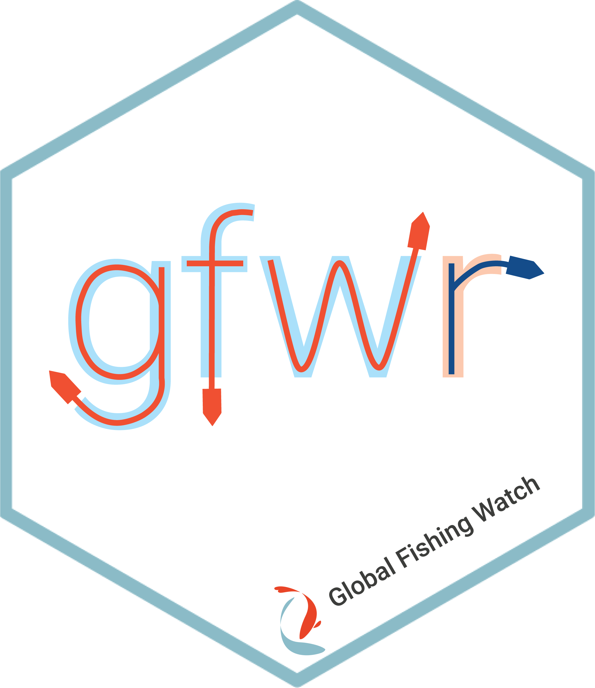

gfwr: Access data from Global Fishing Watch APIs



The gfwr R package is a simple wrapper for the Global
Fishing Watch (GFW) APIs.
It provides convenient functions to freely pull GFW data directly into R
in tidy formats.
The package currently works with the following APIs:
- Vessels API: vessel search and identity based on AIS self reported data and public registry information
- Events API: encounters, loitering, port visits, AIS-disabling events and fishing events based on AIS data
- Gridded fishing effort (4Wings API): apparent fishing effort based on AIS data
Note: See the Terms of Use page for GFW APIs for information on our API licenses and rate limits.
Installation
You can install the most recent version of gfwr
using:
# Check/install remotes
if (!require("remotes"))
install.packages("remotes")
remotes::install_github("GlobalFishingWatch/gfwr")gfwr is also in the rOpenSci R-universe,
and can be installed like this:
install.packages("gfwr",
repos = c("https://globalfishingwatch.r-universe.dev",
"https://cran.r-project.org"))Once everything is installed, you can load and use gfwr
in your scripts with library(gfwr)
Authorization
The use of gfwr requires a GFW API token, which users
can request from the GFW API
Portal. Save this token to your .Renviron file using
usethis::edit_r_environ() and adding a variable named
GFW_TOKEN to the file
(GFW_TOKEN="PASTE_YOUR_TOKEN_HERE"). Save the
.Renviron file and restart the R session to make the edit
effective.
Then use the gfw_auth() helper function to inform the
key on your function calls. You can use gfw_auth() directly
or save the information to an object in your R workspace every time and
pass it to subsequent gfwr functions.
So you can do:
key <- gfw_auth()or this
key <- Sys.getenv("GFW_TOKEN")Note:
gfwrfunctions are set to usekey = gfw_auth()by default.
Vessels API
The get_vessel_info() function allows you to get vessel
identity details from the GFW
Vessels API.
There are two search types: search, and
id.
-
searchis performed by using parametersqueryfor basic searches andwherefor advanced searchers using SQL expressions-
querytakes a single identifier that can be the MMSI, IMO, callsign, or shipname as input and identifies all vessels that match. -
wheresearch allows for the use of complex search with logical clauses (AND, OR) and fuzzy matching with terms such as LIKE, using SQL syntax (see examples in the function) -
includesadds information from public registries. Options are “MATCH_CRITERIA”, “OWNERSHIP” and “AUTHORIZATIONS”
-
Examples
To get information of a vessel using its MMSI, IMO number, callsign
or name, the search can be done directly using the number or the string.
For example, to look for a vessel with
MMSI = 224224000:
get_vessel_info(query = 224224000,
search_type = "search",
key = key)
#> 1 total vessels
#> $dataset
#> # A tibble: 1 × 1
#> dataset
#> <chr>
#> 1 public-global-vessel-identity:v3.0
#>
#> $registryInfoTotalRecords
#> # A tibble: 1 × 1
#> registryInfoTotalRecords
#> <int>
#> 1 1
#>
#> $registryInfo
#> # A tibble: 1 × 16
#> index recordId sourceCode ssvid flag shipname nShipname callsign imo
#> <dbl> <chr> <list> <chr> <chr> <chr> <chr> <chr> <chr>
#> 1 1 e0c9823749264a… <chr [6]> 2242… ESP AGURTZA… AGURTZAB… EBSJ 8733…
#> # ℹ 7 more variables: transmissionDateFrom <chr>, transmissionDateTo <chr>,
#> # geartypes <chr>, lengthM <dbl>, tonnageGt <int>, vesselInfoReference <chr>,
#> # extraFields <list>
#>
#> $registryOwners
#> # A tibble: 0 × 2
#> # ℹ 2 variables: index <dbl>, <list> <list>
#>
#> $registryPublicAuthorizations
#> # A tibble: 3 × 5
#> index dateFrom dateTo ssvid sourceCode
#> <dbl> <chr> <chr> <chr> <list>
#> 1 1 2019-01-01T00:00:00Z 2019-10-01T00:00:00Z 224224000 <chr [1]>
#> 2 1 2012-01-01T00:00:00Z 2019-01-01T00:00:00Z 224224000 <chr [1]>
#> 3 1 2019-10-15T00:00:00Z 2023-02-01T00:00:00Z 306118000 <chr [1]>
#>
#> $combinedSourcesInfo
#> # A tibble: 2 × 10
#> index vesselId geartypes_name geartypes_source geartypes_yearFrom
#> <dbl> <chr> <chr> <chr> <int>
#> 1 1 6632c9eb8-8009-abdb-… PURSE_SEINE_S… GFW_VESSEL_LIST 2019
#> 2 1 3c99c326d-dd2e-175d-… PURSE_SEINE_S… GFW_VESSEL_LIST 2015
#> # ℹ 5 more variables: geartypes_yearTo <int>, shiptypes_name <chr>,
#> # shiptypes_source <chr>, shiptypes_yearFrom <int>, shiptypes_yearTo <int>
#>
#> $selfReportedInfo
#> # A tibble: 2 × 14
#> index vesselId ssvid shipname nShipname flag callsign imo messagesCounter
#> <dbl> <chr> <chr> <chr> <chr> <chr> <chr> <chr> <int>
#> 1 1 6632c9eb8… 3061… AGURTZA… AGURTZAB… BES PJBL 8733… 418581
#> 2 1 3c99c326d… 2242… AGURTZA… AGURTZAB… ESP EBSJ 8733… 135057
#> # ℹ 5 more variables: positionsCounter <int>, sourceCode <list>,
#> # matchFields <chr>, transmissionDateFrom <chr>, transmissionDateTo <chr>To do more specific searches (imo = '8300949'), combine
different fields (imo = '8300949' AND ssvid = '214182732')
and do fuzzy matching
("shipname LIKE '%GABU REEFE%' OR imo = '8300949'"), use
parameter where instead of query:
get_vessel_info(where = "shipname LIKE '%GABU REEFE%' OR imo = '8300949'",
search_type = "search",
key = key)
#> 1 total vessels
#> $dataset
#> # A tibble: 1 × 1
#> dataset
#> <chr>
#> 1 public-global-vessel-identity:v3.0
#>
#> $registryInfoTotalRecords
#> # A tibble: 1 × 1
#> registryInfoTotalRecords
#> <int>
#> 1 1
#>
#> $registryInfo
#> # A tibble: 1 × 17
#> index recordId sourceCode ssvid flag shipname nShipname callsign imo
#> <dbl> <chr> <list> <chr> <chr> <chr> <chr> <chr> <chr>
#> 1 1 b16ca93ea690fc… <chr [2]> 6290… GMB GABU RE… GABUREEF… C5J278 8300…
#> # ℹ 8 more variables: latestVesselInfo <lgl>, transmissionDateFrom <chr>,
#> # transmissionDateTo <chr>, geartypes <chr>, lengthM <dbl>, tonnageGt <int>,
#> # vesselInfoReference <chr>, extraFields <list>
#>
#> $registryOwners
#> # A tibble: 4 × 7
#> index name flag ssvid sourceCode dateFrom dateTo
#> <dbl> <chr> <chr> <chr> <list> <chr> <chr>
#> 1 1 FISHING CARGO SERVICES PAN 629009266 <chr [1]> 2024-08-07T10:… 2025-…
#> 2 1 FISHING CARGO SERVICES PAN 613590000 <chr [1]> 2022-01-24T09:… 2024-…
#> 3 1 FISHING CARGO SERVICES PAN 214182732 <chr [1]> 2019-02-23T11:… 2022-…
#> 4 1 FISHING CARGO SERVICES PAN 616852000 <chr [1]> 2012-01-08T19:… 2019-…
#>
#> $registryPublicAuthorizations
#> # A tibble: 0 × 2
#> # ℹ 2 variables: index <dbl>, <list> <list>
#>
#> $combinedSourcesInfo
#> # A tibble: 4 × 10
#> index vesselId geartypes_name geartypes_source geartypes_yearFrom
#> <dbl> <chr> <chr> <chr> <int>
#> 1 1 9827ea1ea-a120-f374-… CARRIER GFW_VESSEL_LIST 2024
#> 2 1 1da8dbc23-3c48-d5ce-… CARRIER GFW_VESSEL_LIST 2022
#> 3 1 0b7047cb5-58c8-6e63-… CARRIER GFW_VESSEL_LIST 2019
#> 4 1 58cf536b1-1fca-dac3-… CARRIER GFW_VESSEL_LIST 2012
#> # ℹ 5 more variables: geartypes_yearTo <int>, shiptypes_name <chr>,
#> # shiptypes_source <chr>, shiptypes_yearFrom <int>, shiptypes_yearTo <int>
#>
#> $selfReportedInfo
#> # A tibble: 4 × 14
#> index vesselId ssvid shipname nShipname flag callsign imo messagesCounter
#> <dbl> <chr> <chr> <chr> <chr> <chr> <chr> <chr> <int>
#> 1 1 9827ea1ea… 6290… GABU RE… GABUREEF… GMB C5J278 8300… 306734
#> 2 1 1da8dbc23… 6135… GABU RE… GABUREEF… CMR TJMC996 8300… 973251
#> 3 1 0b7047cb5… 2141… GABU RE… GABUREEF… MDA ER2732 8300… 642750
#> 4 1 58cf536b1… 6168… GABU RE… GABUREEF… COM D6FJ2 8300… 469834
#> # ℹ 5 more variables: positionsCounter <int>, sourceCode <list>,
#> # matchFields <chr>, transmissionDateFrom <chr>, transmissionDateTo <chr>- The
idsearch allows the user to specify a vector ofvesselIds
Note:
vesselIdis an internal ID generated by GFW to connect data accross APIs and involves a combination of vessel and tracking data information. It can be retrieved usingget_vessel_info()and fetching the vector of responses inside$selfReportedInfo$vesselId. See the identity vignette for more information.
To search by vesselId, use parameter ids
and specify search_type = "id":
get_vessel_info(ids = "8c7304226-6c71-edbe-0b63-c246734b3c01",
search_type = "id",
key = key)
#> 1 total vessels
#> $dataset
#> # A tibble: 1 × 1
#> dataset
#> <chr>
#> 1 public-global-vessel-identity:v3.0
#>
#> $registryInfoTotalRecords
#> # A tibble: 1 × 1
#> registryInfoTotalRecords
#> <int>
#> 1 5
#>
#> $registryInfo
#> # A tibble: 5 × 17
#> index recordId sourceCode ssvid flag shipname nShipname callsign imo
#> <dbl> <chr> <list> <chr> <chr> <chr> <chr> <chr> <chr>
#> 1 1 a8d00ce54b37ad… <chr [3]> 2733… RUS FRIO FO… FRIOFORW… UCRZ 9076…
#> 2 1 a8d00ce54b37ad… <chr [2]> 5111… PLW FRIO FO… FRIOFORW… T8A4891 9076…
#> 3 1 a8d00ce54b37ad… <chr [6]> 2106… CYP FRIO FO… FRIOFORW… 5BWC3 9076…
#> 4 1 a8d00ce54b37ad… <chr [2]> 3413… KNA FRIO FO… FRIOFORW… V4JQ3 9076…
#> 5 1 a8d00ce54b37ad… <chr [2]> 3546… PAN FRIO AE… FRIOAEGE… 3FGY4 9076…
#> # ℹ 8 more variables: latestVesselInfo <lgl>, transmissionDateFrom <chr>,
#> # transmissionDateTo <chr>, geartypes <chr>, lengthM <int>, tonnageGt <int>,
#> # vesselInfoReference <chr>, extraFields <list>
#>
#> $registryOwners
#> # A tibble: 3 × 7
#> index name flag ssvid sourceCode dateFrom dateTo
#> <dbl> <chr> <chr> <chr> <list> <chr> <chr>
#> 1 1 COLINER RUS 273379740 <chr [1]> 2015-02-27T10:59:43Z 2025-01-31T23:5…
#> 2 1 COLINER CYP 511101495 <chr [1]> 2024-07-04T14:27:04Z 2024-07-24T14:2…
#> 3 1 COLINER CYP 210631000 <chr [1]> 2013-05-15T20:19:43Z 2024-07-04T14:1…
#>
#> $registryPublicAuthorizations
#> # A tibble: 3 × 5
#> index dateFrom dateTo ssvid sourceCode
#> <dbl> <chr> <chr> <chr> <list>
#> 1 1 2023-01-01T00:00:00Z 2024-12-31T00:00:00Z 210631000 <chr [1]>
#> 2 1 2020-01-01T00:00:00Z 2024-12-01T00:00:00Z 210631000 <chr [1]>
#> 3 1 2024-08-09T00:00:00Z 2024-12-01T00:00:00Z 273379740 <chr [1]>
#>
#> $combinedSourcesInfo
#> # A tibble: 5 × 10
#> index vesselId geartypes_name geartypes_source geartypes_yearFrom
#> <dbl> <chr> <chr> <chr> <int>
#> 1 1 da1cd7e1b-b8d0-539c-… CARRIER GFW_VESSEL_LIST 2015
#> 2 1 3c81a942b-bf0a-f476-… CARRIER GFW_VESSEL_LIST 2015
#> 3 1 8c7304226-6c71-edbe-… CARRIER GFW_VESSEL_LIST 2013
#> 4 1 0cb77880e-ee49-2ce4-… CARRIER GFW_VESSEL_LIST 2012
#> 5 1 0edad163f-f53d-9ddb-… CARRIER GFW_VESSEL_LIST 2024
#> # ℹ 5 more variables: geartypes_yearTo <int>, shiptypes_name <chr>,
#> # shiptypes_source <chr>, shiptypes_yearFrom <int>, shiptypes_yearTo <int>
#>
#> $selfReportedInfo
#> # A tibble: 1 × 14
#> index vesselId ssvid shipname nShipname flag callsign imo messagesCounter
#> <dbl> <chr> <chr> <chr> <chr> <chr> <chr> <chr> <int>
#> 1 1 8c7304226… 2106… FRIO FO… FRIOFORW… CYP 5BWC3 9076… 3369802
#> # ℹ 5 more variables: positionsCounter <int>, sourceCode <list>,
#> # matchFields <chr>, transmissionDateFrom <chr>, transmissionDateTo <chr>To specify more than one vesselId, you can submit a
vector:
get_vessel_info(ids = c("8c7304226-6c71-edbe-0b63-c246734b3c01",
"6583c51e3-3626-5638-866a-f47c3bc7ef7c",
"71e7da672-2451-17da-b239-857831602eca"),
search_type = 'id',
key = key)
#> 3 total vessels
#> $dataset
#> # A tibble: 3 × 1
#> dataset
#> <chr>
#> 1 public-global-vessel-identity:v3.0
#> 2 public-global-vessel-identity:v3.0
#> 3 public-global-vessel-identity:v3.0
#>
#> $registryInfoTotalRecords
#> # A tibble: 3 × 1
#> registryInfoTotalRecords
#> <int>
#> 1 5
#> 2 1
#> 3 2
#>
#> $registryInfo
#> # A tibble: 8 × 17
#> index recordId sourceCode ssvid flag shipname nShipname callsign imo
#> <dbl> <chr> <list> <chr> <chr> <chr> <chr> <chr> <chr>
#> 1 1 a8d00ce54b37ad… <chr [3]> 2733… RUS FRIO FO… FRIOFORW… UCRZ 9076…
#> 2 1 a8d00ce54b37ad… <chr [2]> 5111… PLW FRIO FO… FRIOFORW… T8A4891 9076…
#> 3 1 a8d00ce54b37ad… <chr [6]> 2106… CYP FRIO FO… FRIOFORW… 5BWC3 9076…
#> 4 1 a8d00ce54b37ad… <chr [2]> 3413… KNA FRIO FO… FRIOFORW… V4JQ3 9076…
#> 5 1 a8d00ce54b37ad… <chr [2]> 3546… PAN FRIO AE… FRIOAEGE… 3FGY4 9076…
#> 6 2 685862e0626f62… <chr [5]> 5480… PHL JOHNREY… JOHNREYN… DUQA7 8118…
#> 7 3 b82d02e5c2c11e… <chr [5]> 4417… KOR ADRIA ADRIA DTBY3 8919…
#> 8 3 b82d02e5c2c11e… <chr [4]> 4417… KOR PREMIER PREMIER DTBY3 8919…
#> # ℹ 8 more variables: latestVesselInfo <lgl>, transmissionDateFrom <chr>,
#> # transmissionDateTo <chr>, geartypes <chr>, lengthM <dbl>, tonnageGt <dbl>,
#> # vesselInfoReference <chr>, extraFields <list>
#>
#> $registryOwners
#> # A tibble: 5 × 7
#> index name flag ssvid sourceCode dateFrom dateTo
#> <dbl> <chr> <chr> <chr> <list> <chr> <chr>
#> 1 1 COLINER RUS 273379740 <chr [1]> 2015-02… 2025-…
#> 2 1 COLINER CYP 511101495 <chr [1]> 2024-07… 2024-…
#> 3 1 COLINER CYP 210631000 <chr [1]> 2013-05… 2024-…
#> 4 2 TRANS PACIFIC JOURNEY FISHING PHL 548012100 <chr [4]> 2017-02… 2019-…
#> 5 3 DONGWON INDUSTRIES KOR 441734000 <chr [2]> 2013-09… 2024-…
#>
#> $registryPublicAuthorizations
#> # A tibble: 8 × 5
#> index dateFrom dateTo ssvid sourceCode
#> <dbl> <chr> <chr> <chr> <list>
#> 1 1 2023-01-01T00:00:00Z 2024-12-31T00:00:00Z 210631000 <chr [1]>
#> 2 1 2020-01-01T00:00:00Z 2024-12-01T00:00:00Z 210631000 <chr [1]>
#> 3 1 2024-08-09T00:00:00Z 2024-12-01T00:00:00Z 273379740 <chr [1]>
#> 4 2 2012-01-01T00:00:00Z 2017-10-25T00:00:00Z 548012100 <chr [1]>
#> 5 2 2019-02-10T18:02:49Z 2025-01-01T00:00:00Z 548012100 <chr [1]>
#> 6 3 2015-10-08T00:00:00Z 2020-07-21T00:00:00Z 441734000 <chr [1]>
#> 7 3 2012-01-01T00:00:00Z 2013-09-19T00:00:00Z 441734000 <chr [1]>
#> 8 3 2013-09-20T00:00:00Z 2025-01-01T00:00:00Z 441734000 <chr [1]>
#>
#> $combinedSourcesInfo
#> # A tibble: 9 × 10
#> index vesselId geartypes_name geartypes_source geartypes_yearFrom
#> <dbl> <chr> <chr> <chr> <int>
#> 1 1 da1cd7e1b-b8d0-539c-… CARRIER GFW_VESSEL_LIST 2015
#> 2 1 3c81a942b-bf0a-f476-… CARRIER GFW_VESSEL_LIST 2015
#> 3 1 8c7304226-6c71-edbe-… CARRIER GFW_VESSEL_LIST 2013
#> 4 1 0cb77880e-ee49-2ce4-… CARRIER GFW_VESSEL_LIST 2012
#> 5 1 0edad163f-f53d-9ddb-… CARRIER GFW_VESSEL_LIST 2024
#> 6 2 71e7da672-2451-17da-… TUNA_PURSE_SE… COMBINATION_OF_… 2017
#> 7 2 55889aefb-bef9-224c-… TUNA_PURSE_SE… COMBINATION_OF_… 2017
#> 8 3 aca119c29-95dd-f5c4-… TUNA_PURSE_SE… COMBINATION_OF_… 2012
#> 9 3 6583c51e3-3626-5638-… TUNA_PURSE_SE… COMBINATION_OF_… 2013
#> # ℹ 5 more variables: geartypes_yearTo <int>, shiptypes_name <chr>,
#> # shiptypes_source <chr>, shiptypes_yearFrom <int>, shiptypes_yearTo <int>
#>
#> $selfReportedInfo
#> # A tibble: 3 × 14
#> index vesselId ssvid shipname nShipname flag callsign imo messagesCounter
#> <dbl> <chr> <chr> <chr> <chr> <chr> <chr> <chr> <int>
#> 1 1 8c7304226… 2106… FRIO FO… FRIOFORW… CYP 5BWC3 9076… 3369802
#> 2 2 71e7da672… 5480… JOHN RE… JOHNREYN… PHL DUQA-7 8118… 133081
#> 3 3 6583c51e3… 4417… ADRIA ADRIA KOR DTBY3 NA 360249
#> # ℹ 5 more variables: positionsCounter <int>, sourceCode <list>,
#> # matchFields <chr>, transmissionDateFrom <chr>, transmissionDateTo <chr>This is useful especially because a vessel can have different
vesselIds in time.
Check the function documentation for examples with the other function arguments and our dedicated vignette for more information about vessel identity markers and the outputs retrieved.
Events API
The get_event() function allows you to get data on
specific vessel activities from the GFW
Events API. Event types include apparent fishing events, potential
transshipment events (two-vessel encounters and loitering by
refrigerated carrier vessels), port visits, and AIS-disabling events
(“gaps”). Find more information about events in our caveat
documentation.
Events in a given time range
You can get events in a given date range. By not specifying
vessels, the response will return results for all
vessels.
get_event(event_type = 'ENCOUNTER',
start_date = "2020-01-01",
end_date = "2020-01-02",
key = key
)
#> [1] "Downloading 286 events from GFW"
#> # A tibble: 286 × 16
#> start end eventId eventType lat lon
#> <dttm> <dttm> <chr> <chr> <dbl> <dbl>
#> 1 2019-12-31 17:50:00 2020-01-01 16:10:00 b8e1833490587… encounter 68.7 50.3
#> 2 2019-12-31 12:00:00 2020-01-01 23:20:00 9d99a5cad40f4… encounter 44.5 136.
#> 3 2019-12-31 10:20:00 2020-01-02 10:20:00 5d6957fcac61d… encounter 9.49 -99.1
#> 4 2019-12-31 17:50:00 2020-01-01 16:10:00 b8e1833490587… encounter 68.7 50.3
#> 5 2019-12-28 00:20:00 2020-01-01 23:40:00 2f326a52b9b48… encounter 43.4 135.
#> 6 2020-01-01 15:00:00 2020-01-01 17:50:00 fe7921dafc86c… encounter 9.49 -99.1
#> 7 2020-01-01 06:00:00 2020-01-01 08:30:00 8822076ecce81… encounter 34.7 129.
#> 8 2020-01-01 00:00:00 2020-01-01 02:40:00 3b109ab4e8fc4… encounter 34.7 129.
#> 9 2020-01-01 00:20:00 2020-01-01 04:30:00 51ecd07a3e058… encounter -0.866 154.
#> 10 2020-01-01 21:20:00 2020-01-01 23:50:00 9d4338d0f08af… encounter 0.487 177.
#> # ℹ 276 more rows
#> # ℹ 10 more variables: regions <list>, boundingBox <list>, distances <list>,
#> # vesselId <chr>, vessel_name <chr>, vessel_ssvid <chr>, vessel_flag <chr>,
#> # vessel_type <chr>, vessel_publicAuthorizations <list>, event_info <list>Note: We do not recommend trying too large downloads, such as all encounters for all vessels over a long period of time. This will possibly return time out (524) errors. Our API team is working on a bulk download solution for the future.
Events in a specific area
You can provide a polygon in sf format or the region
code (such as an EEZ code) to filter the raster. Check the function
documentation for more information about parameters region
and region_source
# fishing events in user shapefile
test_polygon <- sf::st_bbox(c(xmin = -70, xmax = -40, ymin = -10, ymax = 5),
crs = 4326) |>
sf::st_as_sfc() |>
sf::st_as_sf()
get_event(event_type = 'FISHING',
start_date = "2020-10-01",
end_date = "2020-10-31",
region = test_polygon,
region_source = 'USER_SHAPEFILE',
key = gfw_auth())
#> [1] "Downloading 59 events from GFW"
#> # A tibble: 59 × 16
#> start end eventId eventType lat lon
#> <dttm> <dttm> <chr> <chr> <dbl> <dbl>
#> 1 2020-10-01 12:54:31 2020-10-01 21:26:31 083f87bff859… fishing 4.75 -51.6
#> 2 2020-10-03 05:50:14 2020-10-05 03:35:27 b68b49e7e365… fishing 4.73 -51.5
#> 3 2020-10-18 00:18:32 2020-10-18 04:04:43 2fd3ab7d1655… fishing 0.449 -47.8
#> 4 2020-10-22 01:59:54 2020-10-22 03:58:15 2ed40086d273… fishing -0.0635 -47.8
#> 5 2020-10-19 17:59:09 2020-10-19 19:04:28 991beb5e3097… fishing 0.541 -47.8
#> 6 2020-10-03 21:08:06 2020-10-04 03:31:11 3ce13bbe2752… fishing 4.75 -51.6
#> 7 2020-10-21 12:16:04 2020-10-21 21:10:32 7b723d79331b… fishing 4.71 -51.5
#> 8 2020-10-17 06:06:57 2020-10-18 20:00:32 8404b41048fc… fishing 4.72 -51.5
#> 9 2020-10-21 23:23:14 2020-10-22 18:05:07 b4600d56f238… fishing 4.69 -51.5
#> 10 2020-10-01 12:09:55 2020-10-02 22:03:36 d8ed35e85829… fishing 4.73 -51.5
#> # ℹ 49 more rows
#> # ℹ 10 more variables: regions <list>, boundingBox <list>, distances <list>,
#> # vesselId <chr>, vessel_name <chr>, vessel_ssvid <chr>, vessel_flag <chr>,
#> # vessel_type <chr>, vessel_publicAuthorizations <list>, event_info <list>Events for specific vessels
To extract events for specific vessels, the Events API needs
vesselId as input, so you always need to use
get_vessel_info() first to extract vesselId
from $selfReportedInfo in the response.
Single vessel events
vessel_info <- get_vessel_info(query = 224224000, key = key)
#> 1 total vessels
vessel_info$selfReportedInfo
#> # A tibble: 2 × 14
#> index vesselId ssvid shipname nShipname flag callsign imo messagesCounter
#> <dbl> <chr> <chr> <chr> <chr> <chr> <chr> <chr> <int>
#> 1 1 6632c9eb8… 3061… AGURTZA… AGURTZAB… BES PJBL 8733… 418581
#> 2 1 3c99c326d… 2242… AGURTZA… AGURTZAB… ESP EBSJ 8733… 135057
#> # ℹ 5 more variables: positionsCounter <int>, sourceCode <list>,
#> # matchFields <chr>, transmissionDateFrom <chr>, transmissionDateTo <chr>The results show this vessel’s story is grouped in two
vesselIds.
To get a list of port visits for that vessel, you can use a single
vesselId of your interest:
id <- vessel_info$selfReportedInfo$vesselId
id
#> [1] "6632c9eb8-8009-abdb-baf9-b67d65f20510"
#> [2] "3c99c326d-dd2e-175d-626f-a3c488a4342b"
get_event(event_type = 'PORT_VISIT',
vessels = id[1],
confidences = 4,
key = key
)
#> [1] "Downloading 25 events from GFW"
#> # A tibble: 25 × 15
#> start end eventId eventType lat lon
#> <dttm> <dttm> <chr> <chr> <dbl> <dbl>
#> 1 2020-08-19 09:44:55 2020-08-19 18:39:59 724b8c1b2fb6d… port_vis… 16.9 -25.0
#> 2 2020-08-08 06:40:40 2020-08-10 08:13:39 acd48bf28e6b3… port_vis… 14.6 -17.4
#> 3 2021-10-17 09:52:51 2021-10-17 16:06:40 d133e151d9edd… port_vis… 14.6 -17.4
#> 4 2019-12-06 11:02:09 2019-12-11 10:20:04 bcd967c59306c… port_vis… 5.20 -4.04
#> 5 2021-05-19 22:46:40 2021-06-08 08:54:49 ed0ffc8600077… port_vis… 14.7 -17.4
#> 6 2020-01-27 08:04:38 2020-02-23 10:18:02 abed2e0c06e4e… port_vis… 16.9 -25.0
#> 7 2020-04-19 06:16:46 2020-04-21 14:02:19 5ad5c93c5448d… port_vis… 28.1 -15.4
#> 8 2020-06-25 09:13:36 2020-06-25 20:31:10 29863e18bfa98… port_vis… 16.9 -25.0
#> 9 2020-06-20 12:33:45 2020-06-20 19:43:10 a8f5401a3bbec… port_vis… 14.6 -17.4
#> 10 2020-05-05 06:52:54 2020-05-07 14:22:35 729df630342f0… port_vis… 5.20 -4.02
#> # ℹ 15 more rows
#> # ℹ 9 more variables: regions <list>, boundingBox <list>, distances <list>,
#> # vesselId <chr>, vessel_name <chr>, vessel_ssvid <chr>, vessel_flag <chr>,
#> # vessel_type <chr>, event_info <list>But to get the whole event history, you can also use the whole vector
of vesselId for that vessel:
get_event(event_type = 'PORT_VISIT',
vessels = id, #using the whole vector of vesselIds
confidences = 4,
key = key
)
#> [1] "Downloading 74 events from GFW"
#> # A tibble: 74 × 15
#> start end eventId eventType lat lon
#> <dttm> <dttm> <chr> <chr> <dbl> <dbl>
#> 1 2018-07-09 06:50:58 2018-07-10 19:13:31 c13d6051d577… port_vis… 0.351 6.76
#> 2 2020-08-19 09:44:55 2020-08-19 18:39:59 724b8c1b2fb6… port_vis… 16.9 -25.0
#> 3 2020-08-08 06:40:40 2020-08-10 08:13:39 acd48bf28e6b… port_vis… 14.6 -17.4
#> 4 2016-05-18 19:31:04 2016-05-22 14:20:05 8f19c373a1d4… port_vis… 5.20 -4.02
#> 5 2018-12-13 18:29:01 2019-02-02 17:49:13 1f16a0b1f7e2… port_vis… 5.29 -4.01
#> 6 2018-02-05 10:13:21 2018-03-18 05:06:54 d68f0f1720a4… port_vis… 14.7 -17.4
#> 7 2021-08-01 12:58:44 2021-08-16 16:00:15 a26f4940e189… port_vis… 5.20 -4.02
#> 8 2019-08-05 07:57:25 2019-08-07 14:33:40 86eadd44ab4a… port_vis… 14.6 -17.4
#> 9 2020-12-14 09:46:52 2020-12-22 16:54:09 9205a53a7b91… port_vis… 5.20 -4.04
#> 10 2018-11-06 17:27:26 2018-11-11 09:43:00 a1e988d98276… port_vis… 5.23 -4.02
#> # ℹ 64 more rows
#> # ℹ 9 more variables: regions <list>, boundingBox <list>, distances <list>,
#> # vesselId <chr>, vessel_name <chr>, vessel_ssvid <chr>, vessel_flag <chr>,
#> # vessel_type <chr>, event_info <list>Note: Try narrowing your search using
start_dateandend_dateif the request is too large and returns a time out error (524)
When a date range is provided to get_event() using both
start_date and end_date, any event overlapping
that range will be returned, including events that start prior to
start_date or end after end_date. If just
start_date or end_date are provided, results
will include all events that end after start_date or begin
prior to end_date, respectively.
Note:
Because encounter events are events between two vessels, a single event will be represented twice in the data, once for each vessel. To capture this information and link the related data rows, theidfield for encounter events includes an additional suffix (1 or 2) separated by a period. Thevesselfield will also contain different information specific to each vessel.
Events for multiple vessels
As another example, let’s combine the Vessels and Events APIs to get fishing events for a list of USA-flagged trawlers:
# Download the list of USA trawlers
usa_trawlers <- get_vessel_info(
where = "flag='USA' AND geartypes='TRAWLERS'",
search_type = "search",
key = key,
quiet = TRUE
)
# Set quiet = FALSE if you want an estimate progress of the downloadThis list returns 6444 vesselIds belonging to 4164
vessels.
usa_trawlers$selfReportedInfo
#> # A tibble: 6,444 × 14
#> index vesselId ssvid shipname nShipname flag callsign imo messagesCounter
#> <dbl> <chr> <chr> <chr> <chr> <chr> <chr> <chr> <int>
#> 1 1 64907178… 3662… SUSAN L SUSANL USA WQZ4631 NA 1733671
#> 2 2 c698dfcc… 3677… TREMONT TREMONT USA WDJ5556 NA 71116
#> 3 3 47b94476… 3668… ORION ORION USA NA NA 23007
#> 4 4 9f555214… 3680… PELICAN PELICAN USA WDJ8253 NA 319425
#> 5 4 15cea26f… 3680… PELICAN PELICAN USA NA NA 407
#> 6 5 0dddd2a8… 3673… SHAMROCK SHAMROCK USA WDD8722 NA 2720
#> 7 5 695b254f… 3673… SHAMROCK SHAMROCK USA NA NA 477
#> 8 5 ac994bda… 3673… NA NA USA WDD8722 NA 3179
#> 9 6 bc29946f… 3667… ALEX ALEX USA WDA2216 NA 839719
#> 10 6 8d68317d… 3667… ALEX ALEX USA NA NA 46135
#> # ℹ 6,434 more rows
#> # ℹ 5 more variables: positionsCounter <int>, sourceCode <list>,
#> # matchFields <chr>, transmissionDateFrom <chr>, transmissionDateTo <chr>To fetch events for this list of vessels, we will use the
vesselId column and send it to the vessels
parameter in get_event() function.
For clarity, we should try to send groups of vesselIds
that belong to the same vessels. For this, we can check the
index column in the $selfReportedInfo
dataset.
Note:
get_event()can receive severalvesselIdsat a time but will fail when the character length of the whole request is too long (~100,000 characters). This means it will fail with error HTTP 422: Unprocessable entity when too manyvesselIdsare requested, this value can be around 2,800vesselIdsdepending on the other parameters of the search.
For this example, we will send the vesselIds
corresponding to the first twenty vessels in the response:
each_USA_trawler <- usa_trawlers$selfReportedInfo[, c("index", "vesselId")]
# how many vessels correspond to the first twenty vessels.
(twenty_usa_trawlers <- each_USA_trawler %>% filter(index <= 20))
#> # A tibble: 48 × 2
#> index vesselId
#> <dbl> <chr>
#> 1 1 64907178b-b02a-f401-afa1-b3a099d7a142
#> 2 2 c698dfcc5-5c85-9329-b1ac-8b3656ea9233
#> 3 3 47b944765-5819-b2ab-8c2e-cfc82bd2e82c
#> 4 4 9f5552145-50ed-92f4-4514-5177b1a6511d
#> 5 4 15cea26f5-57ad-acac-4cbf-b45cefb7ab04
#> 6 5 0dddd2a83-3626-24f1-0fe6-3c4d45bbb409
#> 7 5 695b254f7-7e6c-ff50-dc63-55139d9e0101
#> 8 5 ac994bdab-b59c-9fcc-659e-40179e5dddfb
#> 9 6 bc29946f2-2b0b-9613-054a-cd59327226d9
#> 10 6 8d68317d6-6610-59c4-c99a-ef4cd41acd1a
#> # ℹ 38 more rowsThere are 48 vesselIds corresponding to those 20
vessels.
Let’s pass the vector of vesselIds to Events API. Now
get the list of fishing events for these trawlers in January, 2020:
events <- get_event(event_type = 'FISHING',
vessels = twenty_usa_trawlers$vesselId,
start_date = "2020-01-01",
end_date = "2020-02-01",
key = key)
#> [1] "Downloading 37 events from GFW"
events
#> # A tibble: 37 × 16
#> start end eventId eventType lat lon
#> <dttm> <dttm> <chr> <chr> <dbl> <dbl>
#> 1 2020-01-06 07:35:06 2020-01-06 10:20:02 47bbfb7d2f0ee… fishing 45.9 -124.
#> 2 2020-01-03 07:38:49 2020-01-03 18:22:45 e67a584f28389… fishing 37.9 -123.
#> 3 2020-01-14 23:39:33 2020-01-15 01:16:19 a8b50bdbf3713… fishing 37.8 -74.2
#> 4 2020-01-01 07:39:30 2020-01-01 09:07:29 732395ad9c1ea… fishing 43.7 -124.
#> 5 2020-01-31 07:58:03 2020-01-31 13:32:38 ce97b3eedf575… fishing 42.8 -125.
#> 6 2020-01-31 15:05:36 2020-01-31 21:32:05 32c27b8be6040… fishing 43.0 -125.
#> 7 2020-01-31 05:25:15 2020-01-31 06:43:40 ea857a15cef2e… fishing 42.8 -125.
#> 8 2020-01-29 10:01:51 2020-01-29 12:21:51 25faed9edb8e8… fishing 42.8 -125.
#> 9 2020-01-30 00:52:46 2020-01-30 09:01:24 8f926abc98248… fishing 38.0 -74.0
#> 10 2020-01-14 00:09:56 2020-01-14 07:27:11 dc8646fae556a… fishing 38.0 -74.0
#> # ℹ 27 more rows
#> # ℹ 10 more variables: regions <list>, boundingBox <list>, distances <list>,
#> # vesselId <chr>, vessel_name <chr>, vessel_ssvid <chr>, vessel_flag <chr>,
#> # vessel_type <chr>, vessel_publicAuthorizations <list>, event_info <list>The columns starting by vessel hold the vessel-related
information for each event: vesselId,
vessel_name, ssvid (MMSI), flag,
vessel type and public authorizations.
events %>%
dplyr::select(starts_with("vessel"))
#> # A tibble: 37 × 6
#> vesselId vessel_name vessel_ssvid vessel_flag vessel_type
#> <chr> <chr> <chr> <chr> <chr>
#> 1 0bc8f5c22-27d2-92d9-a979-2a… GRANADA 367156340 USA fishing
#> 2 47a337946-6ed2-b5b7-adf8-b8… MISTASEA 338200347 USA fishing
#> 3 64907178b-b02a-f401-afa1-b3… SUSAN L 366211560 USA fishing
#> 4 8d68317d6-6610-59c4-c99a-ef… ALEX 366788850 USA fishing
#> 5 454a28f85-56e4-93cb-efa6-ff… BERNADETTE 366233570 USA fishing
#> 6 454a28f85-56e4-93cb-efa6-ff… BERNADETTE 366233570 USA fishing
#> 7 454a28f85-56e4-93cb-efa6-ff… BERNADETTE 366233570 USA fishing
#> 8 454a28f85-56e4-93cb-efa6-ff… BERNADETTE 366233570 USA fishing
#> 9 64907178b-b02a-f401-afa1-b3… SUSAN L 366211560 USA fishing
#> 10 64907178b-b02a-f401-afa1-b3… SUSAN L 366211560 USA fishing
#> # ℹ 27 more rows
#> # ℹ 1 more variable: vessel_publicAuthorizations <list>When no events are available, the get_event() function
returns nothing.
get_event(event_type = 'FISHING',
vessels = twenty_usa_trawlers$vesselId[2],
start_date = "2020-01-01",
end_date = "2020-01-01",
key = key
)
#> [1] "Your request returned zero results"
#> NULLFishing effort API
The get_raster() function gets a raster from the 4Wings
API and converts the response to a data frame. In order to use it,
you should specify:
- The spatial resolution, which can be
LOW(0.1 degree) orHIGH(0.01 degree) - The temporal resolution, which can be
HOURLY,DAILY,MONTHLY,YEARLYorENTIRE. - The variable to group by:
FLAG,GEARTYPE,FLAGANDGEARTYPE,MMSIorVESSEL_ID - The date range
note: this must be 366 days or less - The region polygon in
sfformat or the region code (such as an EEZ code) to filter the raster - The source for the specified region. Currently,
EEZ,MPA,RFMOorUSER_SHAPEFILE(forsfshapefiles).
User-defined shapefile
You can load an sf shapefile with your area of interest and fetch
fishing effort for this area using
region_source = 'USER_SHAPEFILE' and
region = [YOUR_SHAPE]. We added a sample shapefile inside
gfwr to show how 'USER_SHAPEFILE' works:
data("test_shape")
test_shape
#> Simple feature collection with 1 feature and 0 fields
#> Geometry type: MULTIPOLYGON
#> Dimension: XY
#> Bounding box: xmin: 56.74815 ymin: 0 xmax: 70 ymax: 21.79799
#> Geodetic CRS: WGS 84
#> geometry
#> 1 MULTIPOLYGON (((70 15.20471...
get_raster(
spatial_resolution = 'LOW',
temporal_resolution = 'YEARLY',
group_by = 'FLAG',
start_date = '2021-01-01',
end_date = '2021-02-01',
region_source = 'USER_SHAPEFILE',
region = test_shape,
key = key
)
#> # A tibble: 2,618 × 6
#> Lat Lon `Time Range` flag `Vessel IDs` `Apparent Fishing Hours`
#> <dbl> <dbl> <dbl> <chr> <dbl> <dbl>
#> 1 3.5 65.5 2021 LKA 1 3.98
#> 2 13.3 62.7 2021 CHN 1 12.8
#> 3 2.9 68.3 2021 LKA 3 27.3
#> 4 2.8 67.9 2021 LKA 1 14.3
#> 5 1.9 67.6 2021 LKA 1 1.38
#> 6 12.7 63.5 2021 CHN 2 2.92
#> 7 12.6 62.5 2021 CHN 2 13
#> 8 3.3 66.5 2021 LKA 1 2.47
#> 9 12.5 62.9 2021 CHN 1 3.75
#> 10 15.9 62.6 2021 CHN 1 7.66
#> # ℹ 2,608 more rowsFishing effort in preloaded EEZ, RFMOs and MPAs
If you want raster data from a particular EEZ, you can use the
get_region_id() function to get the EEZ id, and enter that
code in the region argument of get_raster()
instead of the region shapefile (with
region_source = "EEZ"):
# use EEZ function to get EEZ code of Cote d'Ivoire
code_eez <- get_region_id(region_name = 'CIV', region_source = 'EEZ', key = key)
get_raster(spatial_resolution = 'LOW',
temporal_resolution = 'YEARLY',
group_by = 'FLAG',
start_date = "2021-01-01",
end_date = "2021-10-01",
region = code_eez$id,
region_source = 'EEZ',
key = key)
#> # A tibble: 577 × 6
#> Lat Lon `Time Range` flag `Vessel IDs` `Apparent Fishing Hours`
#> <dbl> <dbl> <dbl> <chr> <dbl> <dbl>
#> 1 4.7 -5.8 2021 CHN 1 3.62
#> 2 1.7 -5.6 2021 BLZ 1 0.39
#> 3 4 -3.6 2021 BES 1 2.99
#> 4 3.1 -4 2021 FRA 1 5.1
#> 5 2.6 -4.3 2021 FRA 1 0.09
#> 6 4.1 -5.7 2021 BLZ 1 0.55
#> 7 5.2 -4.1 2021 CHN 1 2.95
#> 8 3.8 -5.4 2021 BLZ 1 1.43
#> 9 1.6 -6.7 2021 GHA 1 1.51
#> 10 5.3 -4 2021 SLV 3 19
#> # ℹ 567 more rowsYou could search for just one word in the name of the EEZ and then decide which one you want:
(get_region_id(region_name = 'France', region_source = 'EEZ', key = key))
#> # A tibble: 3 × 3
#> id label iso3
#> <int> <chr> <chr>
#> 1 5677 France FRA
#> 2 48966 Joint regime area Spain / France FRA
#> 3 48976 Joint regime area Italy / France FRAFrom the results above, let’s say we’re interested in the French
Exclusive Economic Zone, 5677
get_raster(spatial_resolution = 'LOW',
temporal_resolution = 'YEARLY',
group_by = 'FLAG',
start_date = "2021-01-01",
end_date = "2021-10-01",
region = 5677,
region_source = 'EEZ',
key = key)
#> # A tibble: 5,430 × 6
#> Lat Lon `Time Range` flag `Vessel IDs` `Apparent Fishing Hours`
#> <dbl> <dbl> <dbl> <chr> <dbl> <dbl>
#> 1 49.8 -0.6 2021 NLD 6 16.6
#> 2 45.2 -2 2021 BEL 4 57.9
#> 3 42.6 3.4 2021 FRA 6 42.7
#> 4 45.1 -3.4 2021 ESP 21 96.2
#> 5 51.2 2.1 2021 BEL 3 19.9
#> 6 48.7 -4.2 2021 FRA 1 1.01
#> 7 49.9 -1.7 2021 BEL 1 1.71
#> 8 46.2 -3.9 2021 FRA 7 45.4
#> 9 44.8 -1.8 2021 ESP 9 54.1
#> 10 47.1 -2.6 2021 FRA 14 166.
#> # ℹ 5,420 more rowsA similar approach can be used to search for a specific Marine Protected Area, in this case the Phoenix Island Protected Area (PIPA)
# use region id function to get MPA code of Phoenix Island Protected Area
code_mpa <- get_region_id(region_name = 'Phoenix',
region_source = 'MPA',
key = key)
get_raster(spatial_resolution = 'LOW',
temporal_resolution = 'YEARLY',
group_by = 'FLAG',
start_date = "2015-01-01",
end_date = "2015-06-01",
region = code_mpa$id[1],
region_source = 'MPA',
key = key)
#> # A tibble: 38 × 6
#> Lat Lon `Time Range` flag `Vessel IDs` `Apparent Fishing Hours`
#> <dbl> <dbl> <dbl> <chr> <dbl> <dbl>
#> 1 -3.6 -176. 2015 KOR 1 1.98
#> 2 -2.6 -176. 2015 KOR 1 13.9
#> 3 -3 -176. 2015 FSM 1 2.16
#> 4 -4.1 -176. 2015 KOR 1 1.57
#> 5 -2.9 -176. 2015 FSM 1 5.09
#> 6 -3.6 -176. 2015 KIR 1 6.07
#> 7 -2.8 -176. 2015 KOR 1 10.4
#> 8 -3.5 -176. 2015 KOR 1 3.11
#> 9 -1 -170. 2015 KOR 1 2.39
#> 10 -4.7 -176. 2015 KOR 2 13.7
#> # ℹ 28 more rowsIt is also possible to filter rasters to regional fisheries
management organizations (RFMO) like "ICCAT",
"IATTC", "IOTC", "CCSBT" and
"WCPFC".
get_raster(spatial_resolution = 'LOW',
temporal_resolution = 'DAILY',
group_by = 'FLAG',
start_date = "2021-01-01",
end_date = "2021-01-04",
region = 'ICCAT',
region_source = 'RFMO',
key = key)
#> # A tibble: 16,424 × 6
#> Lat Lon `Time Range` flag `Vessel IDs` `Apparent Fishing Hours`
#> <dbl> <dbl> <date> <chr> <dbl> <dbl>
#> 1 38.9 26.8 2021-01-02 TUR 2 3
#> 2 59 0.1 2021-01-03 GBR 2 13.9
#> 3 59.9 25.1 2021-01-03 FIN 2 3
#> 4 59.9 -2.8 2021-01-03 GBR 1 3.32
#> 5 47.6 -3 2021-01-02 FRA 1 2.41
#> 6 51.4 -8.9 2021-01-02 IRL 1 0.79
#> 7 58.9 10.6 2021-01-03 SWE 1 0.58
#> 8 38.7 26.7 2021-01-03 TUR 1 13.4
#> 9 15.7 -29.7 2021-01-03 JPN 1 1.09
#> 10 11.8 -16.8 2021-01-03 KOR 1 0.88
#> # ℹ 16,414 more rowsNote: For a complete list of MPAs, RFMOs and EEZ, check the function
get_regions()
The get_region_id() function also works in reverse. If a
region id is passed as a numeric to the function as the
region_name, the corresponding region label or iso3 code
can be returned. This is especially useful when events are returned with
regions.
# using same example as above
get_event(event_type = 'FISHING',
vessels = twenty_usa_trawlers$vesselId,
start_date = "2020-01-01",
end_date = "2020-02-01",
key = key
) %>%
# extract EEZ id code
dplyr::mutate(eez = as.character(
purrr::map(purrr::map(regions, purrr::pluck, 'eez'),
paste0, collapse = ','))) %>%
dplyr::select(eventId, eventType, start, end, lat, lon, eez) %>%
dplyr::rowwise() %>%
dplyr::mutate(eez_name = get_region_id(region_name = as.numeric(eez),
region_source = 'EEZ',
key = key)$label) %>%
dplyr::select(-start, -end)
#> [1] "Downloading 37 events from GFW"
#> # A tibble: 37 × 6
#> # Rowwise:
#> eventId eventType lat lon eez eez_name
#> <chr> <chr> <dbl> <dbl> <chr> <chr>
#> 1 47bbfb7d2f0ee76f1f6789a163639ec3 fishing 45.9 -124. 8456 United States
#> 2 e67a584f28389a843e98d17b063570c7 fishing 37.9 -123. 8456 United States
#> 3 ce97b3eedf575b960a40fe9437ef8477 fishing 42.8 -125. 8456 United States
#> 4 32c27b8be60405dd20d344325b298d04 fishing 43.0 -125. 8456 United States
#> 5 ea857a15cef2ef00df6b4645d4e7f699 fishing 42.8 -125. 8456 United States
#> 6 25faed9edb8e8e2b7098fb6d55d5fbb4 fishing 42.8 -125. 8456 United States
#> 7 a8b50bdbf3713e47b131f203abc7a339 fishing 37.8 -74.2 8456 United States
#> 8 8f926abc98248f6f1090bae0ece11271 fishing 38.0 -74.0 8456 United States
#> 9 dc8646fae556a4fd14b3083ea57a6cfe fishing 38.0 -74.0 8456 United States
#> 10 e77d4c67e09568bf6d21806a8b685527 fishing 38.0 -73.9 8456 United States
#> # ℹ 27 more rowsWhen your API request times out
For API performance reasons, the get_raster() function
restricts individual queries to a single year of data. However, even
with this restriction, it is possible for API request to time out before
it completes. When this occurs, the initial get_raster()
call will return an HTTP 524 error, and subsequent API requests using
any gfwr get_ function will return an HTTP 429
error until the original request completes:
Error in
httr2::req_perform(): ! HTTP 429 Too Many Requests. • Your application token is not currently enabled to perform more than one concurrent report. If you need to generate more than one report concurrently, contact us at apis@globalfishingwatch.org
Although no data was received, the request is still being processed
by the APIs and will become available when it completes. To account for
this, gfwr includes the get_last_report()
function, which lets users request the results of their last API request
with get_raster().
The get_last_report() function will tell you if the APIs
are still processing your request and will download the results if the
request has finished successfully. You will receive an error message if
the request finished but resulted in an error or if it’s been >30
minutes since the last report was generated using
get_raster(). For more information, see the Get
last report generated endpoint documentation on the GFW API
page.
Contributing
We welcome all contributions to improve the package! Please read our Contribution Guide and reach out!